Hello! I am Will Hobkirk, a PhD candidate at The University of Sydney.
My supervisor is Jonathan Spreer and my auxiliary supervisor is Stephan Tillman.
My research focus is in Algebraic and Geometric Topology.
Below is a model of a 3-Folded surface embedded in L(9,1). In the 3D model what you are seeing is the intersection of the 3-Folded surface with one of the two solid tori of a genus 1 Heegaard decomposition of L(9,1). The intersection of this 3-Folded surface with the other solid torus is a single meridional disk. A p-Folded surface is an oriented folded surface in the sense of Turaev where the orientation of the interior induces a consistent orientation along each component of the singular locus and the index of every component of the singular locus is p. These objects realise

classes. What makes this 3-Folded surface special is that it has the maximum euler characteristic of any 3-Folded surface embedded in L(9,1) which does not separate the ambient space.